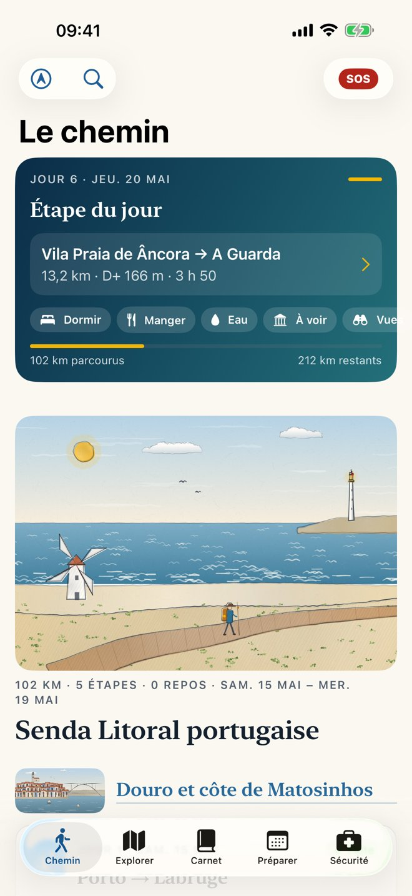
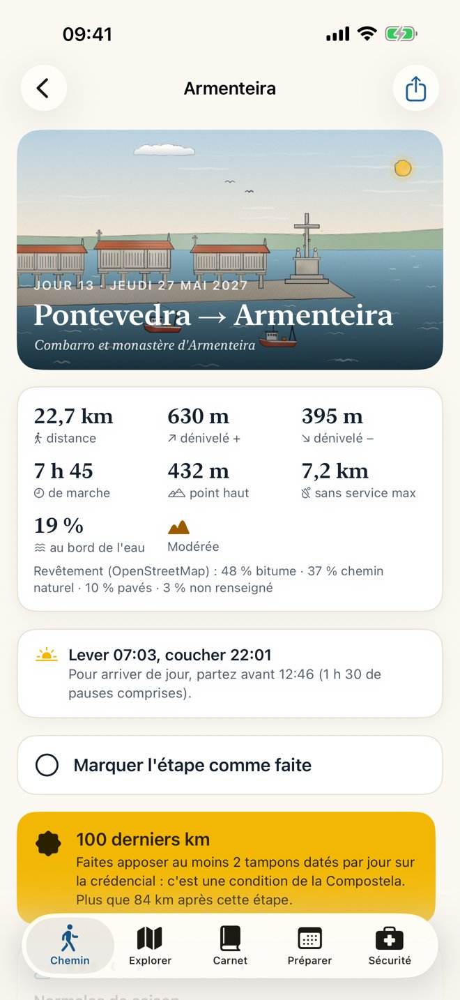
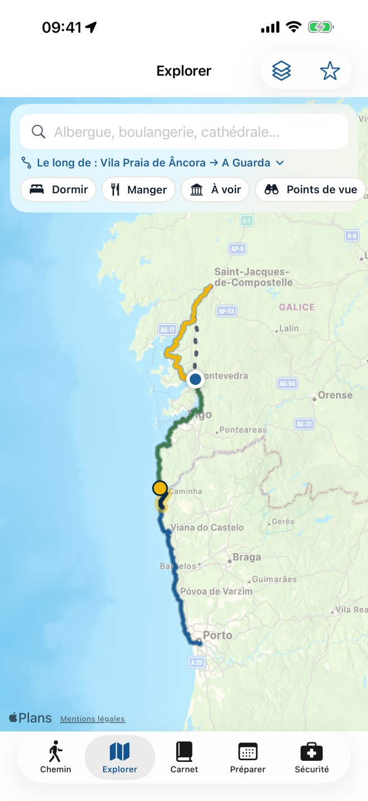
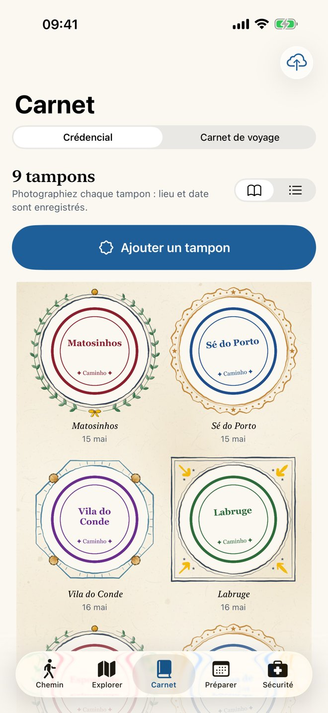
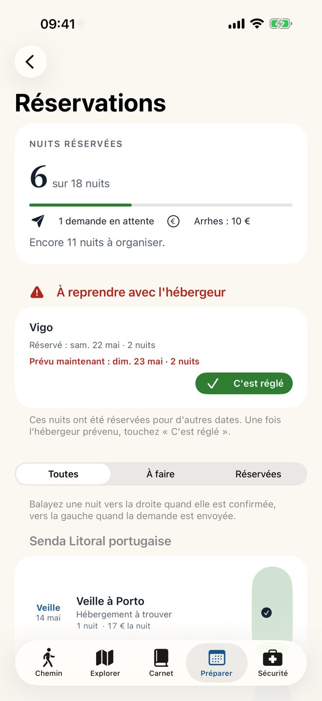
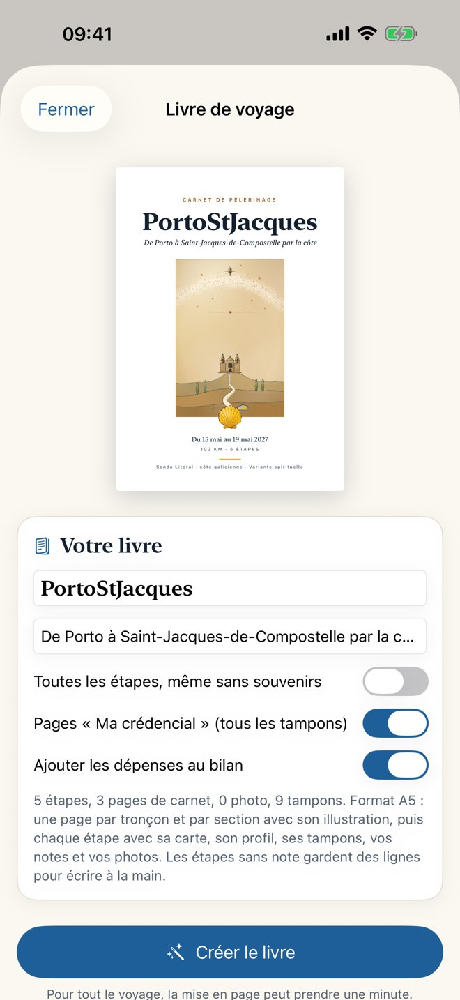

PortoStJacques
PortoStJacques314 kilomètres à pied, de la cathédrale de Porto à celle de Saint-Jacques-de-Compostelle, au plus près de l'océan : les passerelles de la côte portugaise, le Minho en bateau, la côte sauvage de Galice, la ría de Vigo, puis la Variante spirituelle par Combarro, Armenteira et la ría d'Arousa. Plus de la moitié du chemin longe la mer ou une ría. 16 étapes, 17 jours avec un repos à Vigo. L'app accompagne le voyage de la préparation à l'arrivée, et l'essentiel fonctionne sans réseau sur le chemin.






Le chemin
- La Senda Litoral portugaise, de Porto à Vila Praia de Âncora : 102 km en 5 étapes, par les quais du Douro, les passerelles de bois, les dunes d'Apúlia et le pont Eiffel de Viana do Castelo.
- La côte galicienne : le Minho en bateau-taxi jusqu'à A Guarda, Oia, Baiona, les plages de Vigo, puis Redondela et Pontevedra. 105 km en 6 étapes.
- La Variante spirituelle : Combarro, le monastère d'Armenteira, la ría d'Arousa à pied, les Torres de Oeste, Padrón, puis Santiago. 107 km en 5 étapes.
- Des variantes : le Camino central depuis Pontevedra (deux jours de moins), le bateau de la Translatio de Vilanova à Pontecesures, et le détour par Vila Nova de Cerveira si aucun bateau ne traverse le Minho.
- Vous choisissez la date de départ : le calendrier, les alertes et la météo suivent.
Chaque étape
- Les chiffres : distance, dénivelé, durée, difficulté, profil altimétrique, part du chemin au bord de l'eau et revêtement (passerelles, chemins, bitume).
- Le terrain : points forts, vigilance, marées, ravitaillement, points d'eau, transports, et où faire tamponner la crédencial. Ce qui n'a pas pu être confirmé est signalé, jamais inventé.
- La météo : prévisions à 15 jours, sinon les normales de saison. Le lever et le coucher du soleil, et l'heure de départ conseillée pour arriver de jour.
Préparer
- Dans les deux sens : de Porto à Santiago, ou de Santiago à Porto.
- Le planning : date de départ, jours de repos, voyage en plusieurs périodes, étape coupée en deux jours, variantes.
- Les alertes selon vos dates : bateau-taxi du Minho l'hiver, Translatio hors saison, albergues fermées l'hiver, nuit de la São João à Porto, vent du nord en été, Année sainte 2027.
- Les réservations : où en est chaque nuit, message de demande prêt en portugais au Portugal et en espagnol en Galice, avec sa traduction, à envoyer par e-mail, SMS ou WhatsApp. Si un changement de calendrier décale une nuit confirmée, l'app liste les hébergeurs à prévenir.
- Le budget estimé, puis les dépenses réelles.
- Venir et repartir : avion, train et car pour rejoindre Porto et rentrer de Santiago.
- Un lexique portugais, espagnol et galicien, avec la prononciation.
Marcher
- Suivi GPS de la trace réellement marchée, écran verrouillé compris (Live Activity), avec une alerte si vous quittez le tracé : utile sur la côte portugaise, où le balisage est partiel.
- Plan B : besoin de vous arrêter plus tôt ? Les transports, le coucher du soleil, et l'étape coupée en deux jours d'un geste.
- Explorer : dormir, manger, à voir, points de vue, courses, eau, santé, services, le long de l'étape ou autour de vous, avec Plans d'Apple, OpenStreetMap et Wikipédia. Une carte neutre reste toujours disponible hors ligne.
- Widget « Étape du jour ».
Se souvenir
- La crédencial : chaque tampon photographié, et le rappel des deux tampons par jour sur les 100 derniers kilomètres.
- Le carnet : notes et photos à chaque étape.
- Le livre de voyage : un PDF au format A5 avec les cartes, les profils, les tampons, vos notes et vos photos, à imprimer.
- La sauvegarde, faite toute seule dans le dossier de votre choix (iCloud Drive conseillé), et sa restauration.
Vos hébergements
L'application n'embarque pas de liste d'hébergements. Si vous avez un fichier d'hébergements PortoStJacques (extension « .portostjacques »), ouvrez-le depuis AirDrop, Messages, Mail ou Fichiers. Ses hébergements restent sur votre iPhone et fonctionnent sans réseau :
- Hébergements du chemin (Préparer) : les étapes, leurs villages et leurs hébergements, une carte, ceux autour de vous ou devant vous sur le chemin, et vos favoris. Une couleur par catégorie (albergue, hôtel, pension, chambre d'hôtes, gîte, appartement, camping), une étoile pour notre sélection vérifiée.
- Une fiche par hébergement : appeler, écrire, site web, trajet depuis votre position à pied, en voiture ou en transports, prix, places et ouverture quand ils sont connus.
- À chaque étape, dans les réservations et dans le plan B, avec « Retenir pour la nuit du… ».
En cas de besoin
Le 112, SNS 24 au Portugal, le Salvamento Marítimo, la Guardia Civil, les numéros utiles, et la fiche « Mes infos » : contact d'urgence, groupe sanguin, allergies, traitements, CEAM, assurance. « Mes infos » se consulte hors ligne.
Sans compte, sans publicité
Rien à créer, aucun achat dans l'app, aucune donnée collectée. Vos notes, photos, tampons, traces et réservations restent sur votre iPhone (et dans la sauvegarde que vous choisissez). L'application est en français. Détails dans la politique de confidentialité.
Sources
Tracés, trait de côte et lieux : © contributeurs OpenStreetMap (ODbL). Altitudes : EU-DEM (Copernicus), via OpenTopoData. Météo : Open-Meteo.com (CC BY 4.0), normales de saison d'après les réanalyses ERA5. Articles et photos : Wikipédia (CC BY-SA). Carte neutre : Natural Earth. Recherche en ligne : Plans d'Apple.